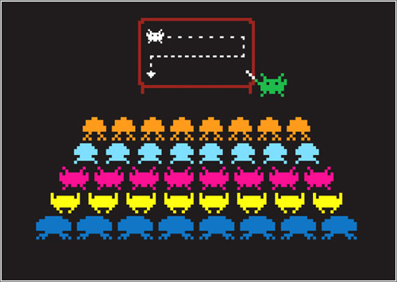
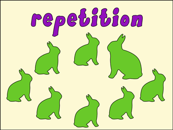
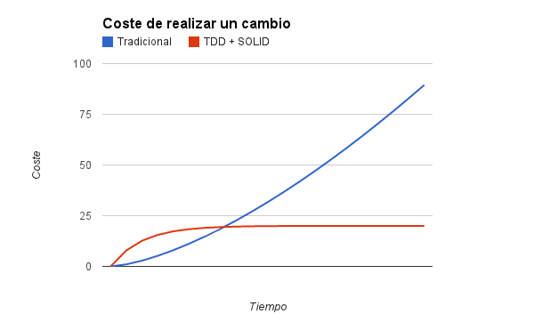

Metodologías Ágiles
Parte técnica: TDD y SOLID
Una presentación de Iván Tomás
¿Qué son?
¿Porqué hacen falta?
¿Porqué hacen falta? (II)
SOLID
Buenas prácticas
- Single Responsibility Principle
- Open-Closed Principle
- Liskov Substitution
- Interface Segregation
- Dependency Inversion
Single Responsibility Principle
Open-Closed Principle
Liskov Substitution
Interface Segregation
Dependency Inversion
Test-Driven Development
Robustez
- Escribe un test
- Mira como falla
- Vuélvelo verde
- Refactoriza
Escribe un test
Un buen test
- Probar una sola funcionalidad
- Idempotente
- Legible
Mira como falla
Vuélvelo verde
Refactoriza
Kaizen
Otros principios de buenas prácticas
YAGNI
You Ain't Gonna Need It
KISS
Keep It Simple, Stupid!

DRY
Don't Repeat Yourself

¿Para qué sirve todo esto?

El siguiente paso
ATDD y BDD
ATDD y BDD
Bibliografía
- Design Principles and Design Patterns, Robert C. Martin, www.objectmentor.com, 2000
- Growing Object-Oriented Software, Guided by Tests, Steve Freeman and Nat Pryce, Addison-Wesley 2010
- Test-Driven Development By Example, Kent Beck, Three Rivers Insitute 2002
- Clean Code, A Handbook of Agile Software Craftsmanship, Robert C. Martin et al., Prentice Hall 2009
- Diseño Ágil con TDD, Carlos Blé Jurado et al., Creative Commons